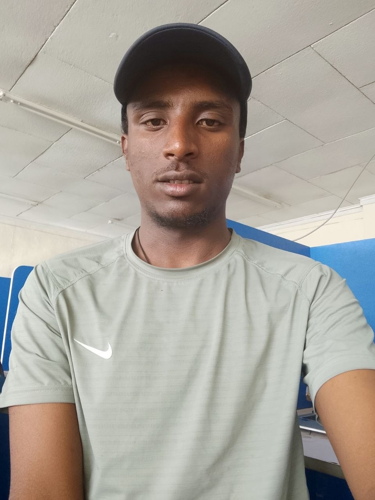

</>01 — FRONTEND
Frontend development
Responsive interfaces that feel fast, accessible, and intuitive on every screen.
Core proficiency88%
HELLO, I'M TEWODROS HAYMANOT
I'm Tewodros Haymanot, a software engineering student passionate about web development, Python, and building useful digital solutions. I enjoy turning real-world problems into clear, accessible, and practical experiences.

01 / A LITTLE ABOUT ME
I combine logical thinking with creative problem-solving to build digital products that are useful, intuitive, and made to last.
I'm a software developer who enjoys the space where engineering meets good design. From planning the architecture to polishing the smallest interaction, I care about how a product works and how it makes people feel.
My approach is simple: understand the problem, build a clear solution, test the details, and keep improving. I'm always exploring new tools and collaborating with people who care about their craft.
02 / MY TOOLKIT
The tools I use to turn ideas into reliable, polished digital experiences.
Responsive interfaces that feel fast, accessible, and intuitive on every screen.
Practical server-side solutions, clean APIs, and well-organized application logic.
Structured data, reliable persistence, and useful insights from information.
Design systems and user-centered workflows with an eye for visual detail.
03 / SELECTED WORK
A selection of experiments, practical builds, and digital products I've enjoyed bringing to life.
A clean analytics dashboard that transforms complex data into clear, actionable insights.
A habit tracker built around small wins and sustainable routines.
A warm, minimal identity for a contemporary botanical studio.
A considered storefront for everyday objects and independent makers.
A calm, location-aware weather experience with a clear visual forecast.
A focused learning dashboard designed to make progress feel achievable.
04 / THE JOURNEY
A timeline of learning, building, and getting a little better with every iteration.
Freelance / Remote
Designing and building responsive websites and small web applications. Working through the full process from requirements and wireframes to implementation, testing, and launch.
Personal projects / Self-directed
Strengthened programming fundamentals through practical builds, version control, UI experiments, and API-based projects.
University studies
Building a strong foundation in software design, algorithms, databases, web technologies, and engineering principles.
05 / WHAT I CAN DO
From the first sketch to the final deployment, I can help turn a good idea into a working product.
Fast, responsive websites built with maintainable code and careful attention to detail.
Discuss a website ↗Turning designs into accessible, polished interfaces with smooth and purposeful interactions.
Discuss a design ↗Useful application experiences with thoughtful flows, APIs, and data-driven features.
Discuss an app ↗HAVE A GOOD IDEA?
06 / GET IN TOUCH
Have a question, an idea, or just want to say hello? My inbox is open. Tell me a little about what you're thinking.
Share a few details and I'll get back to you as soon as I can.
EMAIL MEhello@example.com↗TEWODROS HAYMANOT / CLIENT SPACE
Sign in to the demo client portal or create a local demo account.
Demo only: account details stay in this browser. Do not use a real password.
LOCAL DEMO / ADMIN
Manage sample project cards in this browser session.
This dashboard is a front-end demonstration, not secure production authentication. Changes use local browser storage.